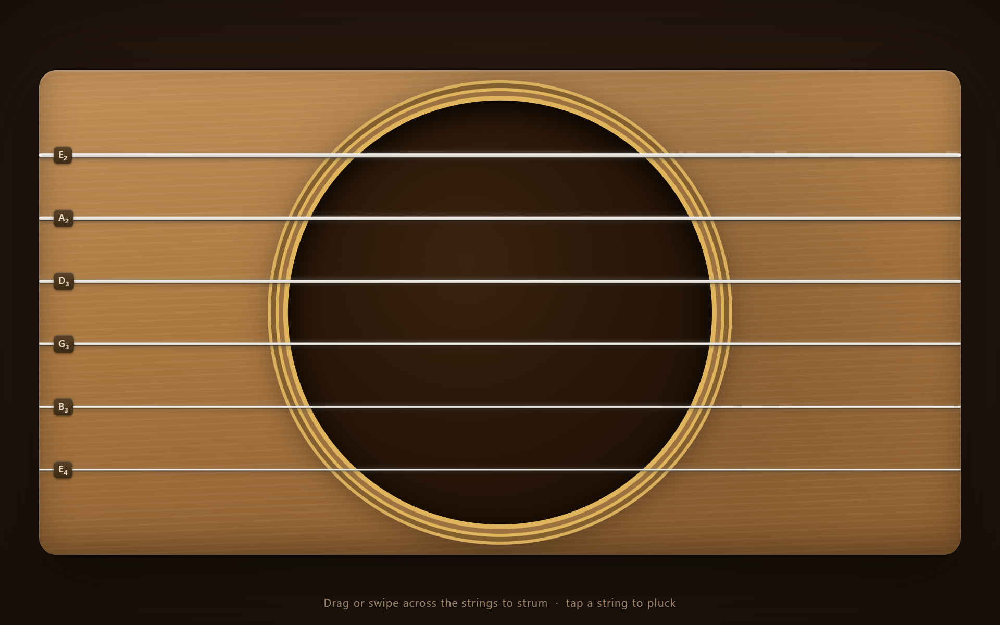
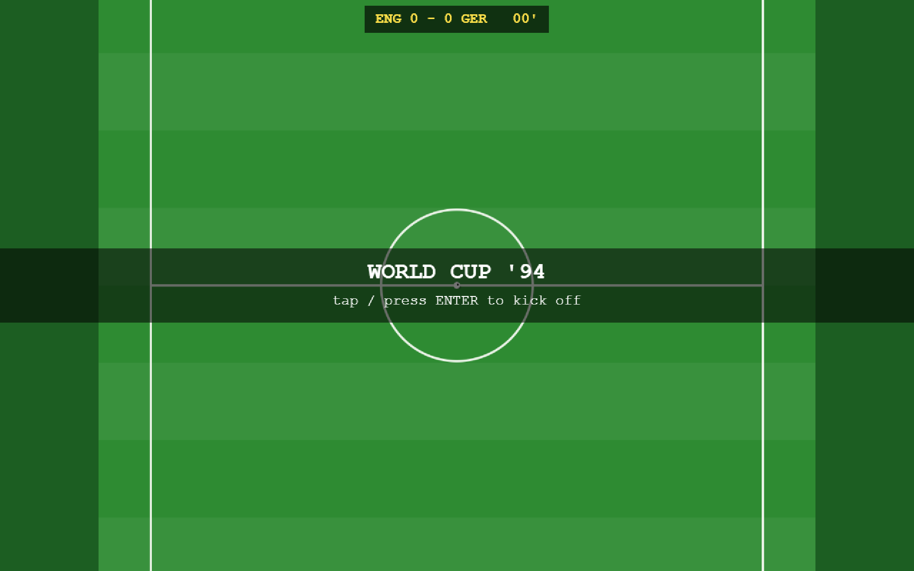
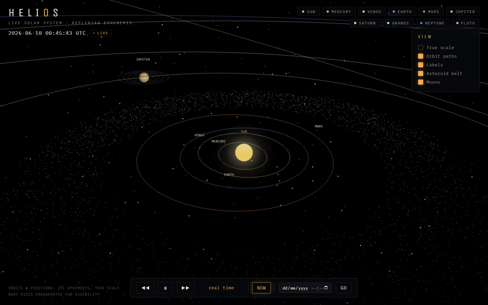
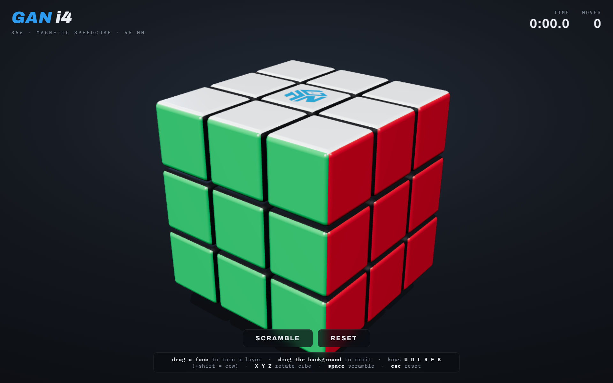
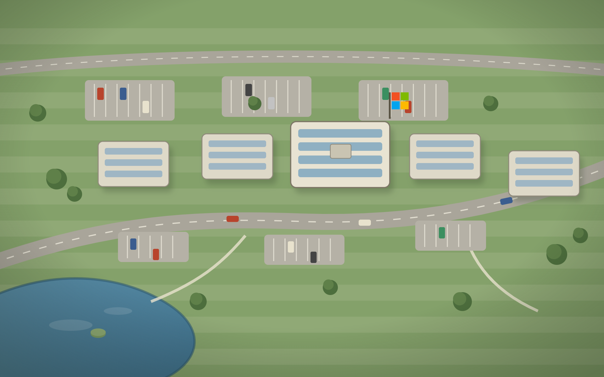

create a guitar as a web app which plays realistic guitar sounds using a PC or mobile device, including support for mouse or touchscreen
The Acoustic Guitar→

create a single-file, top-down football (soccer) game, inspired by Sensible Soccer on the Amiga. include an AI opponent.
World Cup '94→

create a 3D solar system with realistic physics, scale, planet colours, and orbits. Make it accurate to realtime.
Helios, a Solar System→

create an accurate, working 3D model of a GAN i4 speedcube, with accurate colours, detail (inc. the GAN logo on the white cap), lighting, and devise an intuitive system to rotate the cube, as well as turning all the layers.
The GAN i4 Speedcube→

create an interactive, single html file, 3D model of the Microsoft Campus on Thames Valley Park in Reading, UK. Focus on the exterior of Building 1, which is the Microsoft HQ (and now the only Microsoft-owned building out of the five). Include a Microsoft flag on the roof of Building 1. Try to use aerial photography, online maps, and other reference photos to get the detail perfect. ensure that you include the car park to the rear of the campus, the roads, the lake, grass, and footpaths. include animations of a few cars coming to and from the car parks in front of the five buildings, and the car parks at the rear. simulate the current lighting and weather based on the current time and weather from an external source.